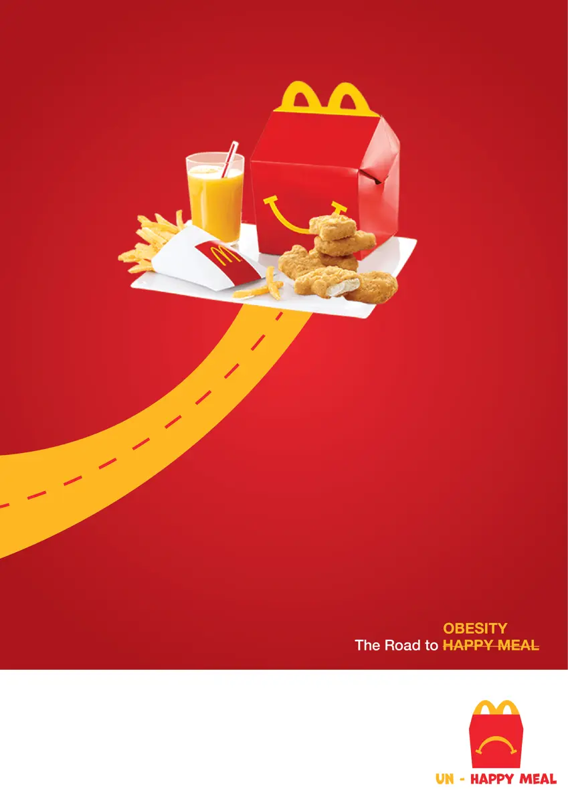
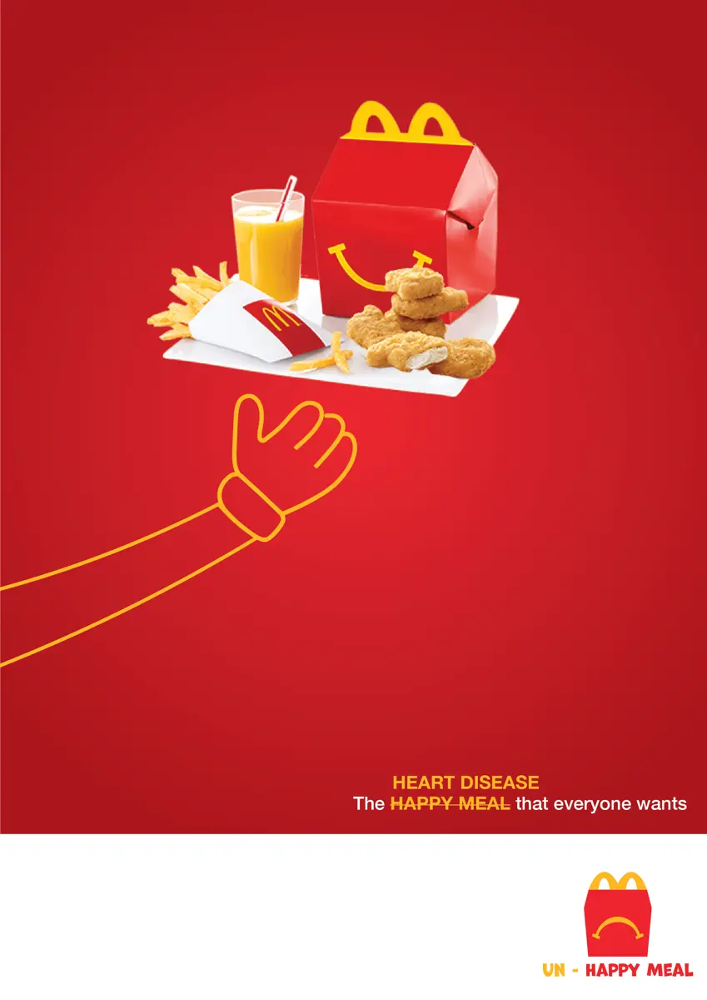
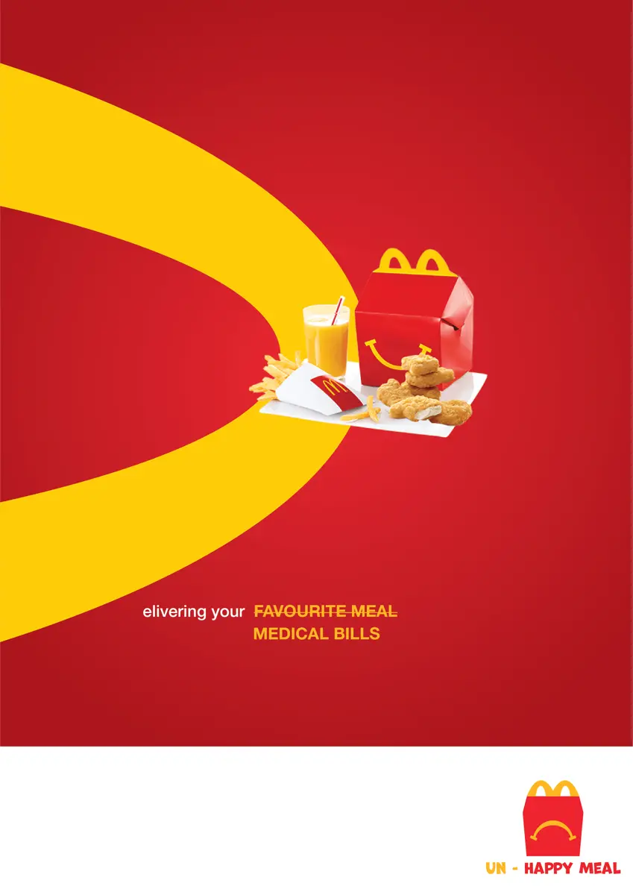

Back
Back
RMIT · Design strategy · Culture jamming
UnHappy Meal
Student concept. Made for a Master’s assignment at RMIT. Not commissioned by, affiliated with or endorsed by McDonald’s. This is not a real advertisement.
UnHappy Meal is a culture-jamming poster campaign. It borrows the cute, friendly look of fast-food advertising and uses it to say what that look normally hides: the health cost of the product.
The Strategy
The brief was to use a “cute” aesthetic as a tool for critique. Cuteness makes people feel safe and cared for, which is why brands use it. I kept every part of that language, the red and yellow, the clean layouts, the cheerful tone, and changed only the message, so the posters read as familiar first and wrong a second later.
Each of the five posters takes one advertising cliché and swaps the promise for its consequence. The sign-off logo does the same: the smile on the box becomes a frown.
The Posters





Why It Works
Effective culture jamming does not reject a brand’s identity, it hijacks it. Because the posters look so close to the real thing, the critique is recognised instantly, and the viewer is asked to consider how much of their idea of “happiness” has been built by advertising.
Student concept. Made for a Master’s assignment at RMIT. Not commissioned by, affiliated with or endorsed by McDonald’s. This is not a real advertisement. The brand’s visual language is referenced here for critique and commentary only.